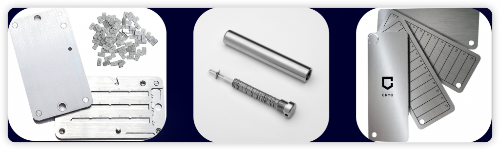
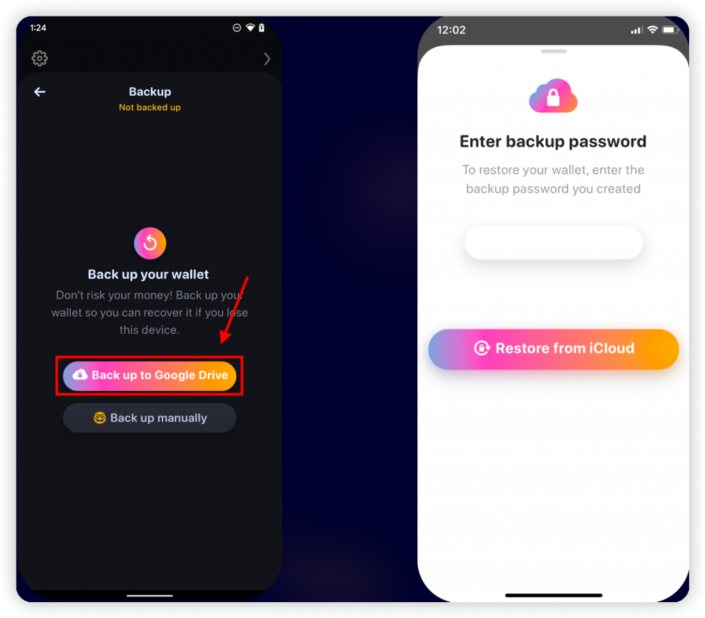
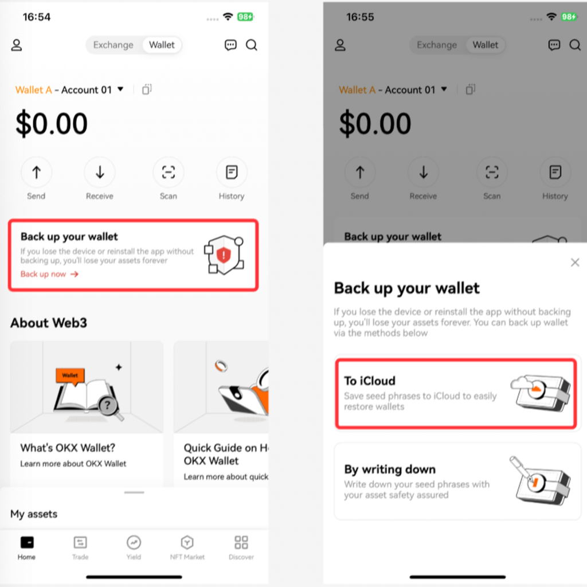
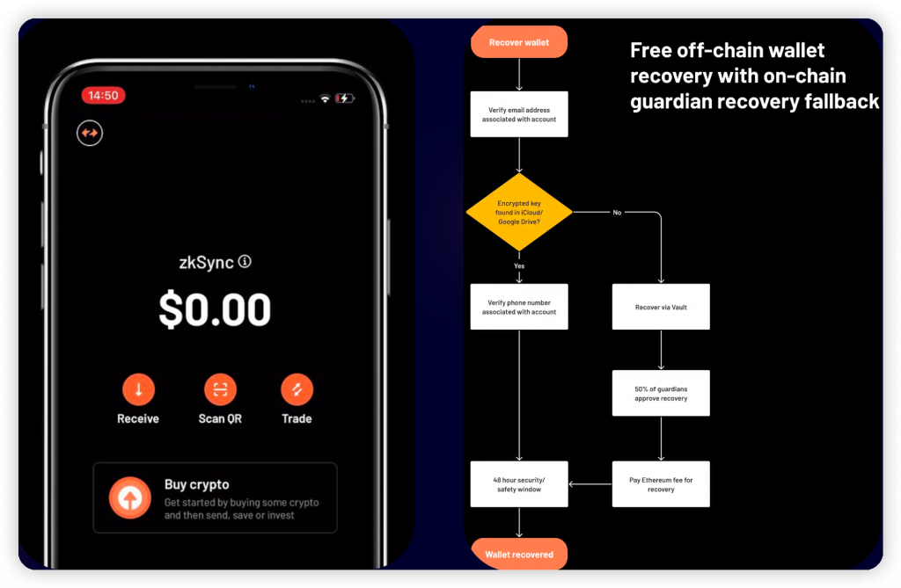
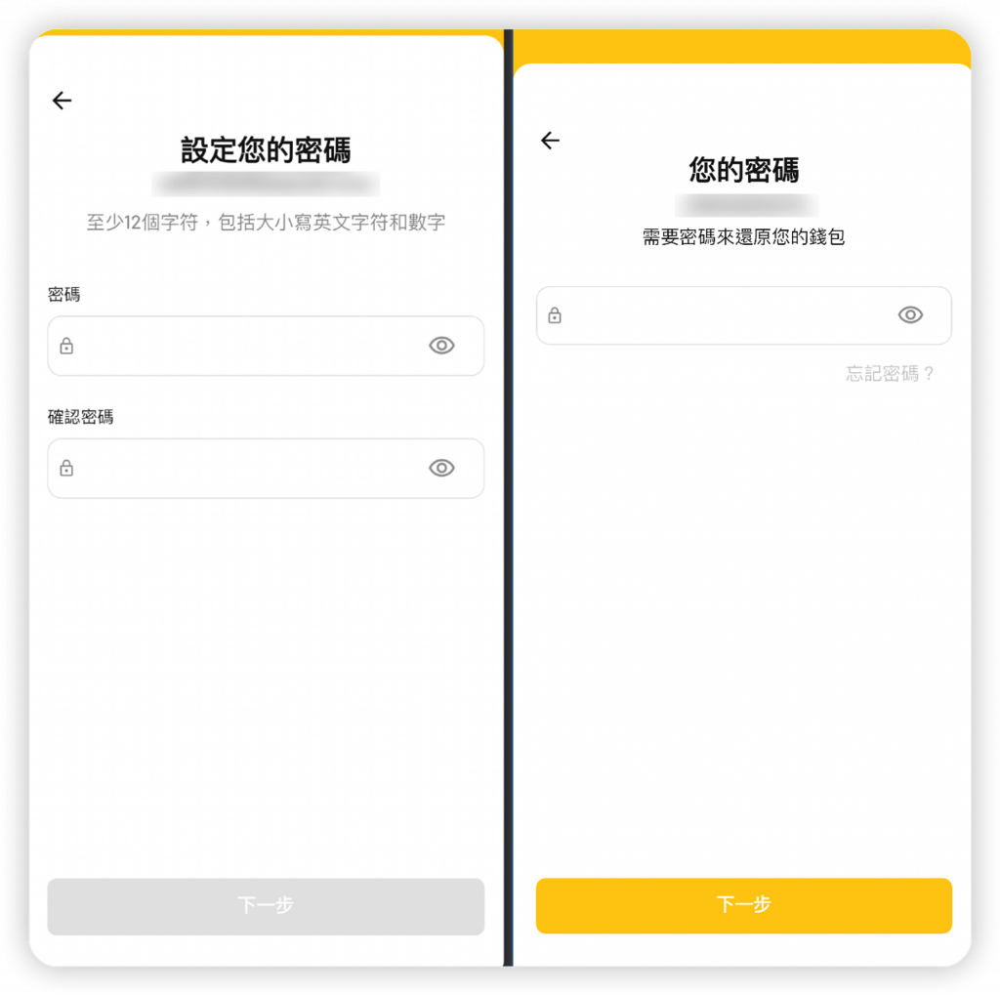
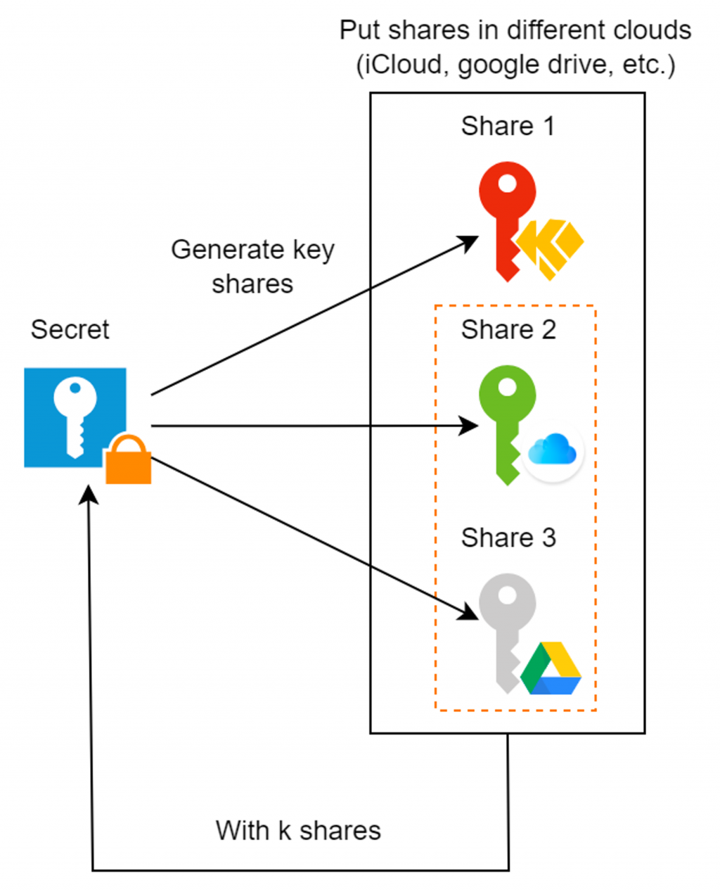
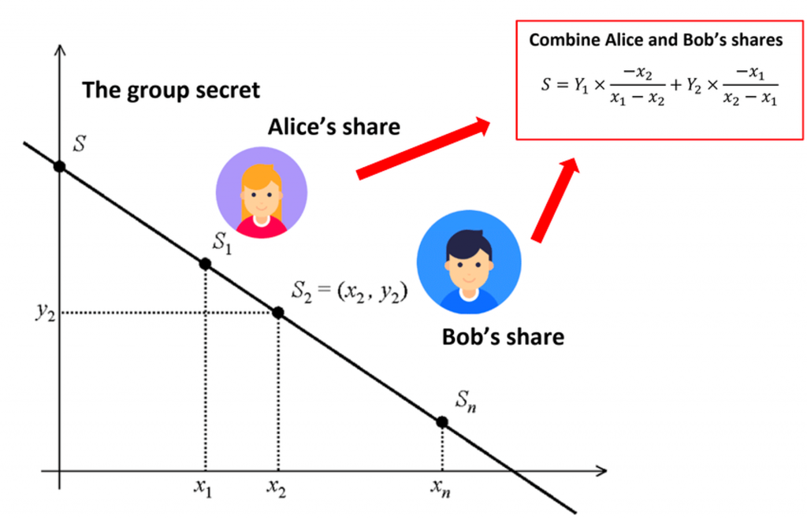
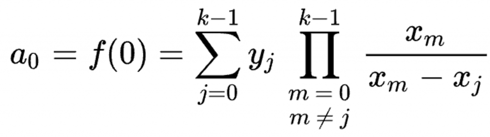
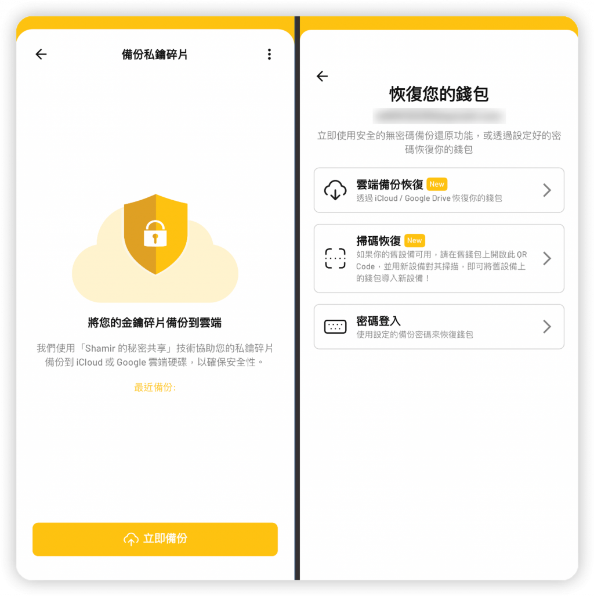
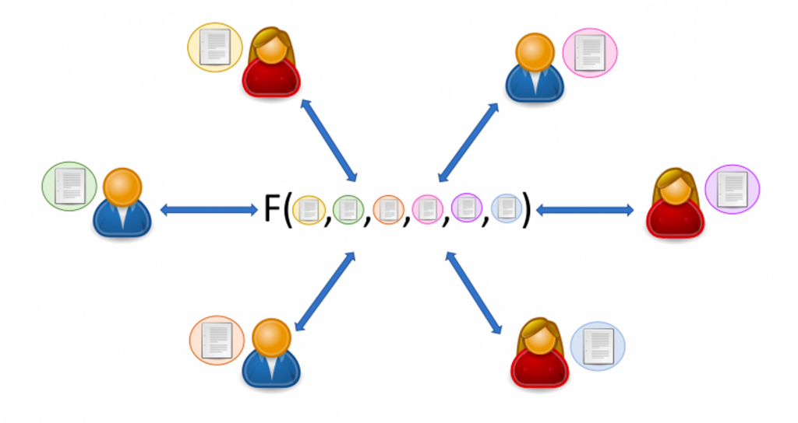

今天我們會講解一般有哪些保存與備份私鑰的方法，而許多錢包 App 都有提供幫使用者備份的選項，因此也會介紹他們的作法以及背後的原理，如 Key Derivation, Shamir’s Secret Sharing 等等。以及較新型的 MPC 錢包是如何運作的。
由於去中心化的精神強調使用者應該要能自己保存自己的私鑰與註記詞，但很多時候要人們記下 12 字的註記詞並安全的保存也是一個高的門檻，會成為初次進入 Web 3 使用者的障礙。因此如何方便又安全的保存私鑰是歷久不衰的議題。
一般來說方便性跟安全性是個取捨，假設我們想自己保管註記詞，以下提供四個等級的註記詞保存方式。
可以把存有註記詞的文件用密碼加密、壓縮成 zip 檔，並備份到 Google Drive。多了一層密碼保護會比 Level 1 的方式更安全，但若密碼被洩漏或忘記，一樣有資產丟失的風險。
針對物理備份方式，如果想擁有較高的物理安全性，也有幾種能防火、防水、防銹、防毀損的備份方式，可以保護註記詞不像紙張儲存那樣容易被自然因素破壞。市面上有許多冷錢包廠商有提供這種備份方式，通常會用鋼板把註記詞排列出來，或是自己刻在上面，都是更耐久的保存方式。

已經有許多人在思考死後要如何讓其他人取得自己的區塊鏈資產，因為以上這幾種方式都可能因為只有該使用者知道註記詞在哪，而在死後沒辦法被找回。
因此一種作法是透過智能合約搭配 Oracle 來監控是否使用者在一段時間內都沒有活動，若符合條件就自動把資金轉移給指定的人，避免使用者因意外而無法操作錢包。但目前這類的解決方案都還沒有到很成熟，畢竟要自動且準確的偵測這件事十分困難，機制也要不能被駭才行。期待未來有更成熟的作法。
以上講解了幾種使用者自己備份註記詞的作法，那麼在各種錢包 App 中是怎麼做備份的呢？
許多錢包 App 為了降低使用者進入 Web3 的門檻，會希望透過較直觀可理解的方式來幫使用者備份私鑰，以下舉幾個例子。
Rainbow Wallet 提供設定密碼備份的選項，在 Android / iOS 上分別可備份到 Google Drive 與 iCloud。而為了讓雲端服務商沒辦法解開使用者的私鑰，通常會設計成如果忘記密碼就無法幫使用者還原回來。

OKX Wallet 同樣也提供用密碼備份的作法，可以看到這是市面上錢包目前最流行的備份方式。

Argent Wallet 的備份方式比較特別，按照官方文件的寫法，他們備份的方式是會先生成一把 Key Encryption Key（KEK），也就是用來加密私鑰的私鑰，會把它存到 Argent 的雲端。並用 KEK 加密錢包的私鑰後備份到 iCloud 或 Google Drive 上。這樣的好處是 Argent 或 iCloud/Google Drive 任一方都解不出使用者的私鑰，並且可以做到不需要密碼來還原錢包。

KryptoGO Wallet 中也提供了用密碼備份的選項，並且要求至少要 12 字來確保安全性，這樣使用者在其他裝置登入也可以用密碼找回錢包。

而密碼備份本質上就是對私鑰與註記詞經過一層加密後備份上雲端，只是這個加密所使用的 Key 是從密碼算出來的，通常會把這個流程稱為 Key Derivation。常見的作法是透過密碼加上 Salt 後，經過一系列的 Slow hash function 的計算，來算出一個可用來做對稱式加密的 Key。
會選用 Slow hash function （如 Argon2, bcrypt, PBKDF2 等等）的目的是讓暴力破解的難度大幅增加，另一方面也要在計算 key derivation 時不要讓使用者等太久（例如幾百毫秒內算完）。關於 KryptoGO Wallet 中使用的密碼備份安全機制，詳細可參考這份文件。
除了以上許多錢包採用的密碼備份機制以外，還有一個備份方式可以讓使用者不需記憶密碼，又維持高的安全性，也就是 Shamir’s Secret Sharing Scheme（SSS）。
SSS 的概念是可以把一個私鑰 (Secret) 拆分成 n 個碎片，各自存放在不同的地方，只需要任選其中 k 個私鑰碎片就能恢復出完整的私鑰。例如在 n=3, k=2 的狀況會有三個私鑰碎片，而只要取得兩個碎片就能還原出完整的私鑰。

因此在 KryptoGO Wallet 中，當使用者選擇使用 SSS 備份時，會將使用者的私鑰碎片備份到 KryptoGO 雲端、iCloud/Google Drive 雲端上，來讓使用者未來換裝置登入時也能直接還原出錢包。
而 SSS 演算法也有一個良好的特性，就是持有一個 secret share 並不會降低暴力破解出 secret 的難度，因此不管是 KryptoGO, iCloud, Google Drive 就算有一個地方的資料外洩，也不會造成資產損失。
SSS 背後的原理是利用建立一個 k-1 次方的多項式函數
f(x)，並在這個多項式函數圖形上找出 n 個點來作為各自的
Secret Share。至於原始的 Secret 值則是
f(0)，這樣就能使用「k 個點能唯一決定一個 k-1
次方的多項式」性質，透過 n 個 Secret Share 中的任意 k 個 Share
來還原出原本的多項是，進而算出 f(0) 也就是原始 Secret
的值。

而還原出 k-1 次方多項式的作法是用到拉格朗日差值法，已經有相關的數學公式來直接計算：

在 KryptoGO Wallet 中也有提供透過 SSS 備份錢包私鑰的功能，結合前面提到的密碼備份選項讓使用者自由選擇：

近年來開始流行的是 MPC 錢包，它的全名是 Multi Party Computation 或稱多方運算，會出現的背景是因為不希望單一裝置有機會拿到完整的私鑰，因為如果私鑰的明文曾經被某個裝置計算出來過，極端情況下有裝置被入侵的風險。因此這個做法也會把私鑰拆成多份，但不同的是沒有一個人能組出完整的私鑰：

而 MPC 的精神是讓一群人共同計算一個函數的回傳值，但對其他人的資訊一無所知。因此在 MPC 錢包中的作法是：
對 BTC, ETH 鏈的 MPC 錢包來說，在計算交易簽章時需要計算的 function 是 ECDSA 簽章，因此必須設計能算出 ECDSA 結果的 MPC 演算法。這種演算法十分複雜，已經超出了今天的範圍，有興趣的讀者可以參考 Fast Secure Two-Party ECDSA Signing 論文， 還有 ZenGo 錢包的實作。
由於前面提到的 MPC 作法是需要所有參與者一起計算，那有沒有像 SSS 演算法那樣只需要部分參與者就能算出結果的作法呢？這個其實就是 TSS (Threshold Signature Scheme) 演算法。他可以讓 n 個參與者中只需要 k 個人就有能力一起對一個交易做簽名，來做到更好的冗余性。有興趣的讀者可以參考 OKX 錢包中的 TSS 功能是如何實作的：https://github.com/okx/threshold-lib/blob/main/docs/Threshold_Signature_Scheme.md
今天我們介紹了作為使用者可以怎麼備份自己的私鑰註記詞，以及一般錢包服務會透過哪些方式來協助使用者安全又便利的備份。接下來最後兩天會介紹一些 Web 3 世界中較前沿的技術，提供讀者對 Web 3 技術更全面的認識。